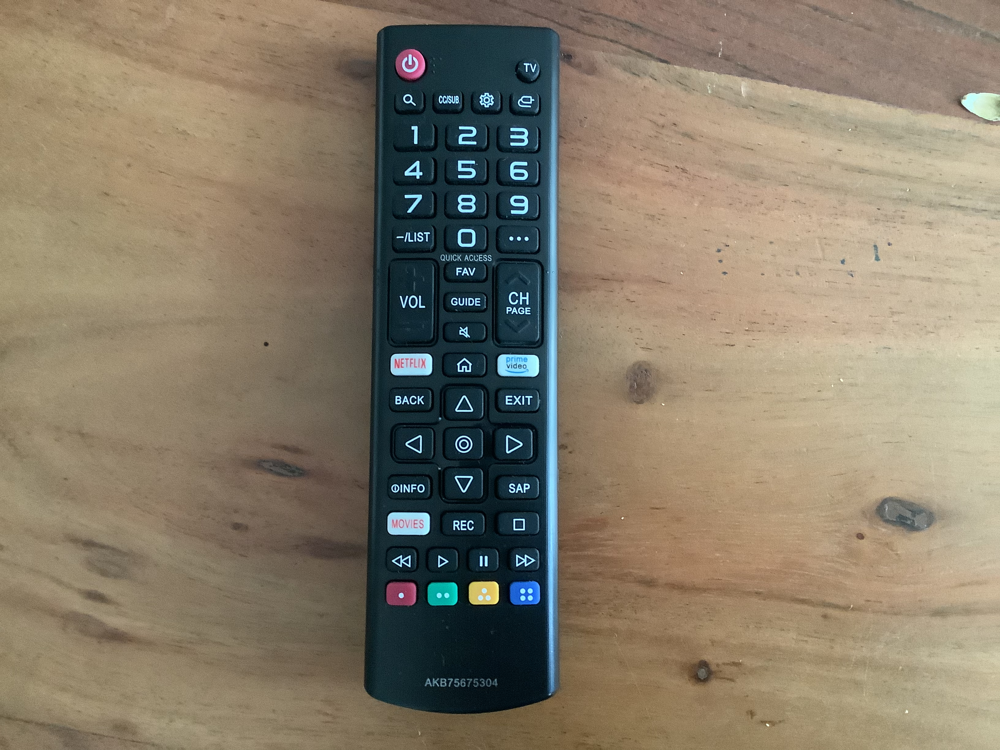
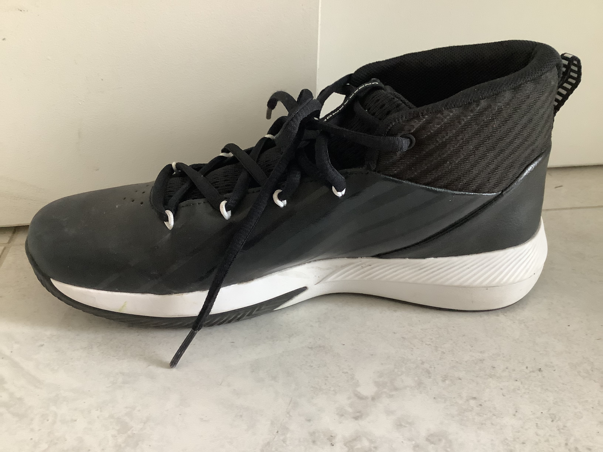
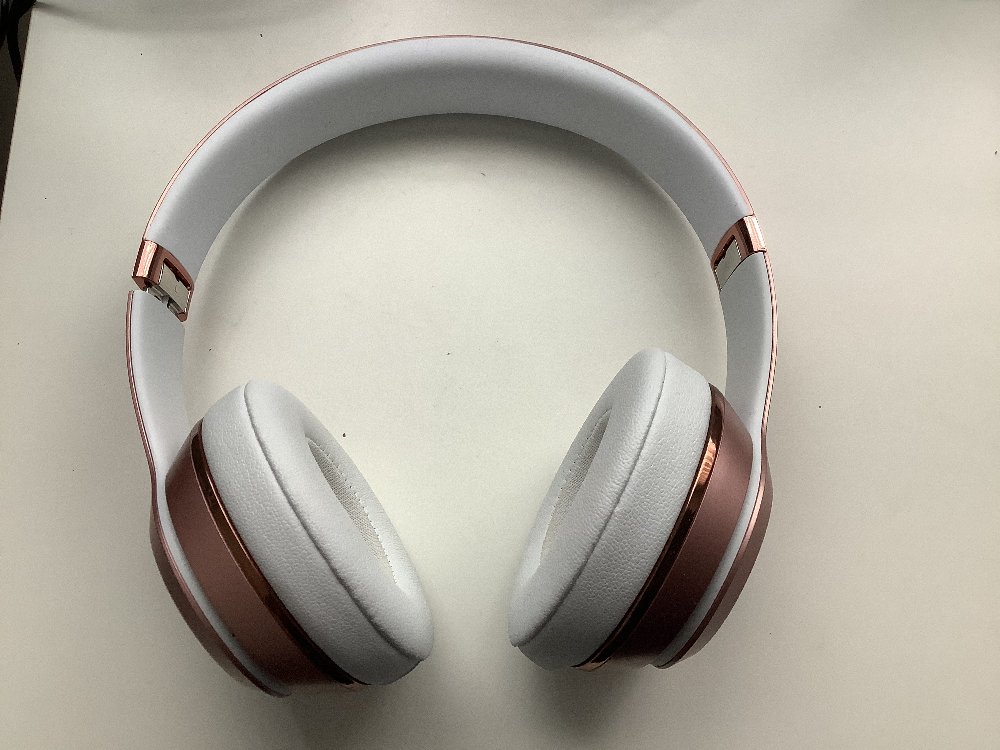

Case Study
I think Google Lens is better
1.Test Image

Output on Google Lens-LG Remote
Output on MobileNet- remote control, remote
2.Test Image

Output on Google Lens-Under Armour Shoes
Output on MobileNet- Loafer
3.Test Image

Output on Google Lens-Apple Beats
Output on MobileNet- Projector